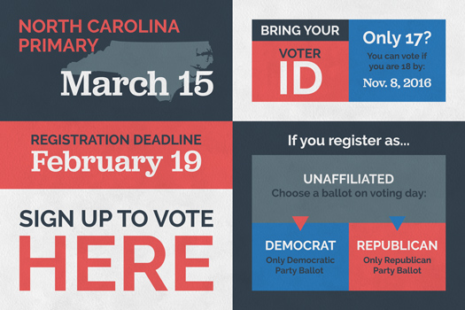
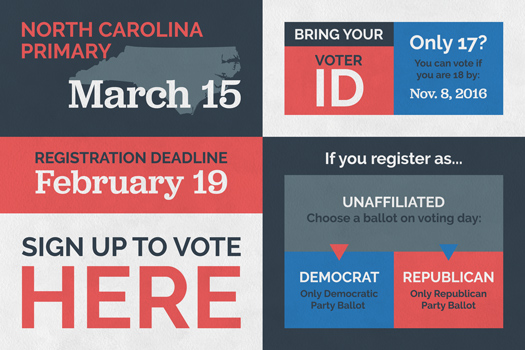

Carolina Students for Bernie

Carolina Students for Bernie is the University of North Carolina at Chapel Hill branch of the Bernie Sanders presidential campaign.
I joined the newly-formed organization back in September, utilizing an opportunity to develop their brand and logo as well as gain experience managing other designers.
CSFB acts as the ground game for the Chapel Hill area, encouraging students, faculty, and city residents to participate in the democratic process.
I am currently building a website for the organization here.
Tabasco Bern Sauce
Bernie's campaign utilizes social media to energize a millennial base and dominate online discussion. The Twitter hashtag, #feelthebern quickly grew in popularity and has become the main hashtag to represent the anti-establishment progressive movement. This photoshopped Tabasco sauce bottle is my small contribution to the phenomenon.


Campaign T-Shirts
What official organization is complete without distinguishing t-shirts? Brandishing the CSFB logo and coming in an array of campaign and UNC-themed colors, these t-shirts provide a significant source of funding for the organization.
 


Pit Campaign Posters
"The Pit" is a centralized area of UNC's campus where most students will pass through at some point during their day. Organizations of all sorts will frequently advertise to and engage with the rest of the student body here. These 3' by 2' posters were designed with readability from a distance in mind.
Rally Against Student Debt Flyer
Hosted by the North Carolina College Students for Bernie, the rally seeks to raise awareness of the rising Inteded to be handed out by volunteers to the public, these flyers direct supporters to the rally, answering all
Pit Campaign Flyers
These half-sheet flyers, printed en masse in black-and-white and handed out to students passing through "The Pit,"
spread awareness of the campaign and our involvement.
One flyer vizualizes the history of the minimum wage and argues the merits for raising it.
The other, a call to action for supporters, details one of our regularly-held events.